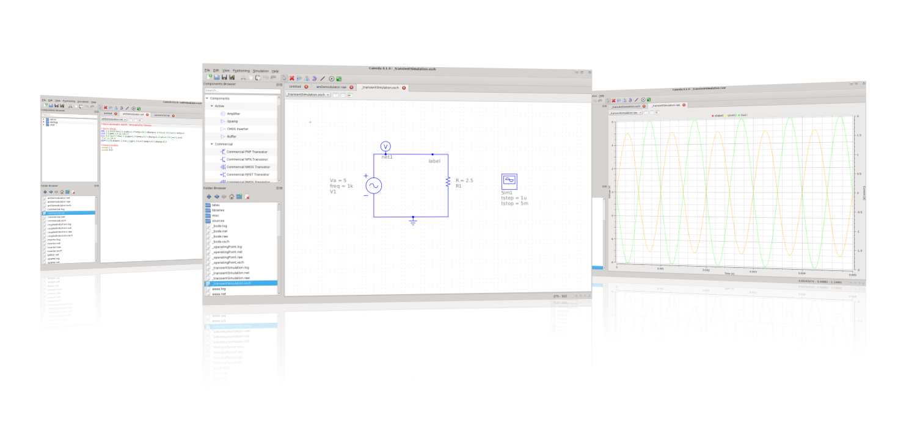

Caneda
Open source EDA software
Índice de la Ayuda
Caneda es un software open source para EDA, enfocado a la facilidad de uso y
portabilidad. El objetivo principal de Caneda es lograr permitir el proceso de diseño
completo desde la captura de esquemáticos, pasando por la simulación, hasta llegar al
layout de circuitos y PCBs.
Mientras que en el corto plazo la captura de esquemáticos y la simulación son los objetivos principales,
en el largo plazo, el diseño de PCBs y edición de layouts serán cubiertos. El software apunta a
soportar todos los tipos posibles de simulaciones, como DC, AC, parámetros S y análisis de distorsión armónica.

Table of Contents
Getting started...
Descripción de los formatos de archivo de Caneda